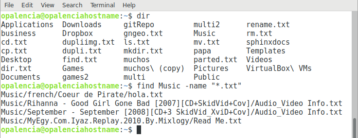

Buscar carpetas y archivos > find¶
Nombre del comando: find
Man page online: https://linux.die.net/man/1/find
Descripción: Buscar archivos en una jerarquía de directorios.
Man page local: $ man find o $ man find > find.txt
Instalado por defecto: Sí, al menos en Debian.
Algunas Opciones:
-name pattern Buscar por nombre según el patrón especificado.
-iname pattern Buscar por nombre según el patrón especificado, sin tomar en cuenta mayúsculas y minúsculas.
-size n[cwbkMG] Buscar por el tamaño de los archivos. [c = bytes, w = two-byte, b = 512-byte, k = Kilobytes, M = Megabytes, G = Gigabytes].
Ejemplo 1: $ find Music -name "*.txt", busca todos los archivos con extensión .txt contenidos en la carpeta Music y sus respectivas subcarpetas. Es importante que el pattern valla encerrado en comillas así como está en el ejemplo, de lo contrario dará errores.
Ejemplo 2: $ sudo find / -iname "boa", busca en toda la distro por archivos o carpetas con el nombre de boa, sin importar si el nombre está en mayúsculas o minúsculas.
Ejemplo 3: $ sudo find / -size +1G -and -size -10G, busca los archivos en toda la distro que, su tamaño sea mayor a 1 GB y menor a 10 GB.
Ejemplo 4: $ sudo find / -size +5M -name "*.jpg", busca todas las imagenes .jpg que su peso sea mayor a 5 MB.